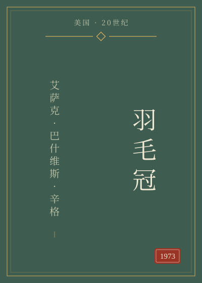
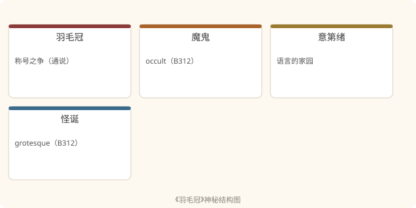

羽毛冠
一、基本信息
| 作者 | 艾萨克·巴什维斯·辛格 |
|---|---|
| 成书/出版 | 1973年（作者页 B312 口径：A Crown of Feathers (1973; National Book Award)） Isaac Bashevis Singer — Encyclopaedia Britannica 与 Elias Canetti — Encyclopaedia Britannica（百科全书） |
| 国别/地区 | 美国 |
| 时代 | 现当代 · 20世纪 |
| 体裁 | 短篇小说集 |
| 语言 | 英语（意第绪语转译） |

《羽毛冠》神秘结构图（主题·结构图）
二、创作背景
作者页（B312）：辛格 major_works 载'A Crown of Feathers (1973; National Book Award)'（B312 作者页定位，详见 shagua 条核对）。
作者（B312）：1978诺奖——意第绪语写作；'blending irony, wit, and wisdom with the occult and grotesque'。
三、内容脉络
意第绪语短篇集：魔鬼、傻瓜与神秘主义（通说待核）。
四、主要人物表
| 人物 | 身份 | 说明 |
|---|---|---|
| 意第绪世界的人们 | 群像 | （通说待核） |
五、主题与艺术特点
- '羽毛冠'的称号之争（通说待核——同名篇）。
- 神秘与怪诞（B312：occult and grotesque）。
- 意第绪文学的现代（通说待核）。
六、影响与评论
- 作者页：辛格 major_works——A Crown of Feathers (1973; National Book Award)（B312）。
Isaac Bashevis Singer — Encyclopaedia Britannica 与 Elias Canetti — Encyclopaedia Britannica（百科全书） - 作者页：辛格1978年诺奖（B312 作者级定位）。
Isaac Bashevis Singer — Encyclopaedia Britannica 与 Elias Canetti — Encyclopaedia Britannica（百科全书）
七、阅读建议
难点
- 意第绪文化语境。
- 神秘主义篇章。
- 《羽毛冠》（中译本信息待核）。
- 英文原版（Farrar, Straus）。
先《傻瓜吉姆佩尔》后本作。
八、待核实
- 1973年出版（Farrar, Straus and Giroux说）核对。
- 同名篇情节待核。
- 国家图书奖（1973——B312 已载）核对。
本页主要来源
相关作品：傻瓜吉姆佩尔好人难寻罗生门（芥川龙之介短篇小说选）
艾萨克·巴什维斯·辛格的其他收录作品：傻瓜吉姆佩尔